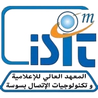

SeniorCare AI
ESP32 · IoT Embarqué
Flutter · Mobile
Supabase · Cloud
Détection de Chute
GPS · Géofencing
Réalisé par
·
Mohammed Akrem BEN ABDESSALEM
Encadrante académique
·
Mme Rana EZZINE — Maître Assistante
Encadrant professionnel
·
M. Racha ZAIBI — Ingénieur R&D
Organisme
·
SmartLab · Faculté de Médecine de Monastir
Année
·
2025 – 2026